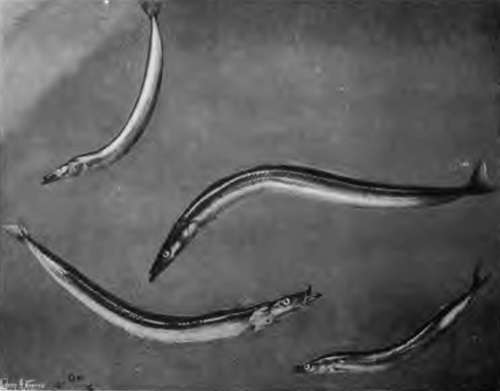
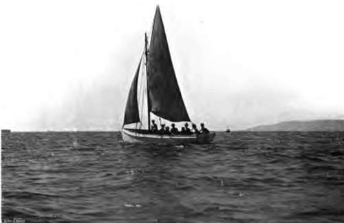

Mackerel Fishing. Part 4
Description
This section is from the book "Fishing", by Horace G. Hutchinson. Also available from Amazon: Fishing.
Mackerel Fishing. Part 4
1 Since writing these lines. I find that my friend, the late Mr. J. C. Wilcocks, also asserts (in "The Sea Fisherman," fourth edition, p. 126) this superiority of the left-hand " float." As I always had the greatest regard for him as a pioneer, and owe much, very much, to his correspondence, I hasten to qualify what is said above with an admission that the fisherman may, in this instance, probably be in the right.
From mackerel fishing with such delicate tackle from a rowing-boat to mackerel fishing with somewhat heavier gear from a boat sailing three or four miles an hour is but a short step. The distinction -which is generally drawn in books by describing the lighter work as "whiffing," and the heavier as "railing" or "plummetting," the latter being a Cornish term-is mainly that of heavier leads and a hand-line instead of a rod. Personally, on the rare occasions on which I do indulge in this style of fishing, chiefly when fresh bait is wanted for the pollack farther out, I use just the same light gut gear in combination with a " plummet" of Cornish pattern, which is simply a solid cone of lead having a longer and shorter loop of strong waxed line let into it. To one loop is attached the line, to the other, preferably with an intervening fathom (six feet) of finer line, the gut collar or trace. As to the line between the hand and the lead, there is not only no particular object in having it very fine, but it is positively undesirable. The fish pay attention only to the line beyond the lead, and a thin line held in the hand soon cuts through to the bone under the constant strain. Even a thicker line, while less likely to chafe the skin, may become unpleasant after an hour's fishing, and a pencil, or, better still, one of the boat's tholes, is far more comfortable to hold, the line being hitched round it. The length of light line beyond the lead varies, as does also the weight of the lead itself, with the thickness and position of the line if several are in use at the same time. Those who fish for the market will use six or eight mackerel lines from each sailing-boat, some being worked from the end of great outrigged booms that project like limbs from the sides of the boat, while others are worked inboard. The lightest line is always worked from the stern of the boat, by way of lessening the chances of fouling, and the lead, which may weigh a pound or even a little less, according to the strength of the breeze and consequent pace at which the boat sails, is about twenty feet from the hook. The next heaviest lines come amidships, and these cany a lead of twice the weight only fifteen feet or less from the hook. The heaviest lines of all are used forard, and in these the lead may weigh as much as three pounds, while the distance between it and the hook is no more than nine or ten feet. These weights and measures have been most carefully worked out as the result of the experience of generations of clever and ingenious fishermen anxious to work as many lines as possible from each boat without the constant fear of entanglement, and they may be taken as, on the whole, the best that can be adopted. The method of taking mackerel on hand-lines out of a sailing-boat differs slightly from the rod-fishing just described. It is found an advantage to keep the lead and hook swinging in the water, which is done by moving the arm to and fro, and thus pulling the lead a foot or two forward and letting it go back again, this movement being performed perhaps half-a-dozen times a minute, sufficiently fatiguing exercise, but at times very well worth while. Much depends on the way in which the fish are feeding. If they are very ravenous, one fastens itself on to the hook every few minutes whether it be kept swinging or not; but at other times, when they are biting short, the swinging movement will catch many that would otherwise be lost.
Such is mackerel fishing under sail. Can it be called sport? Well, seeing that sailing itself is called sport-as are also mountaineering, diving, and the driving of a motor car-the name may perhaps be applied without hesitation. Yet where the sport comes in it would be difficult to say. The essence of sport, or of enjoyment in sport, is some difficulty, greater or less, overcome, and there can be no difficulty in periodically hauling in forty or fifty yards of line with a comparatively small fish, half-drowned by the rate at which it is pulled through the water, at the other end of it. The novice and the skilled hand are on a par, and there is no reason why the one should hook more fish or fewer than the other. And yet, as I have already said, in spite of these considerations, or perhaps because of them, mackerel fishing in this way is the pastime that attracts more people who visit the coast in the summer months than any other of the kind. The popular taste is being educated in its sea-fishing, but the education has not gone very far, and the fastidiousness is not marked. So long as plenty of fish are caught, particularly if the fish are good to eat, most people don't much mind how they catch them. Lying back in a sailing-boat and dancing up and down a picturesque coast is so much more agreeable than anchoring in a tumbling sea eight or ten miles from land, seen from which distant point of view all the coastline merges into an ill-defined grey line. So it is, and small blame to those who have the courage of their opinions and frankly own their preference. Yet it is yachting rather than fishing, and should be classed as such.
It is as if a man were invited to a covert shoot and should ask to be allowed to sit on the sunny side of a hill, smoking his pipe, and shooting such stray birds or rabbits as should come his way.
There is, however, another style of mackerel fishing which, to my way of thinking, is infinitely preferable, and that is drift-line fishing from an anchored boat. In order that this shall be suc-cessful, the mackerel must be abundant, and also widely distributed in the locality. It will not do if there are one or two large shoals only roaming about the coast. That condition of things answers the purpose well enough when one fishes from a sailing-boat, for it is not a matter of great difficulty to sail about until the fish are found. When, however, it is a case of the fish coming to the fisherman instead of the fisherman going to the fish, it is of importance that the latter should be found almost anywhere in the bay or open sea, as the case may be, opposite the port from which the angler starts. Given sufficient fish and calm weather, this drift-lining for mackerel is very pretty work. The boat may be anchored a mile or two from shore; if on a well-known mackerel ground, generally at the edge of a reef of rocks; or in a spot where the fish are actually known to be at the time, so much the better. They will not be seen at the surface, nor are the movements of the gulls of much use, because drift-lining is practised only late in the summer, when the shoals have broken up and the fish are feeding nearer the bottom. As a matter of fact, the drift-line takes a larger class of mackerel altogether, fish of an earlier year, but these are not taken alongshore in this way until the end of July or beginning of August, though the surface lines may catch fish as early as the latter days of May. The only sea-birds that I have found any guidance as to the movements of these drift-line mackerel are the cormorants and shags, which are sometimes seen paddling among the launce-eel-like fish not unlike sand-eels, on which both the cormorant and the larger mackerel and bass greedily prey-and which may generally be trusted as giving a pretty close idea of where the fish are. And the fish found by such a clue will also be feeding, a matter of importance, though the mackerel is perhaps less subject to interludes of abstemiousness than most others.
68.- Launce And Sand-Eel.
69.- Plummeung For Mackerel
Continue to: